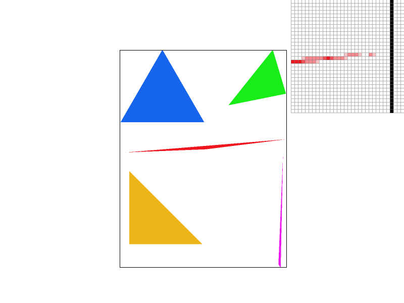
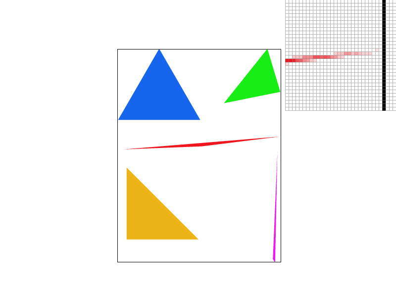
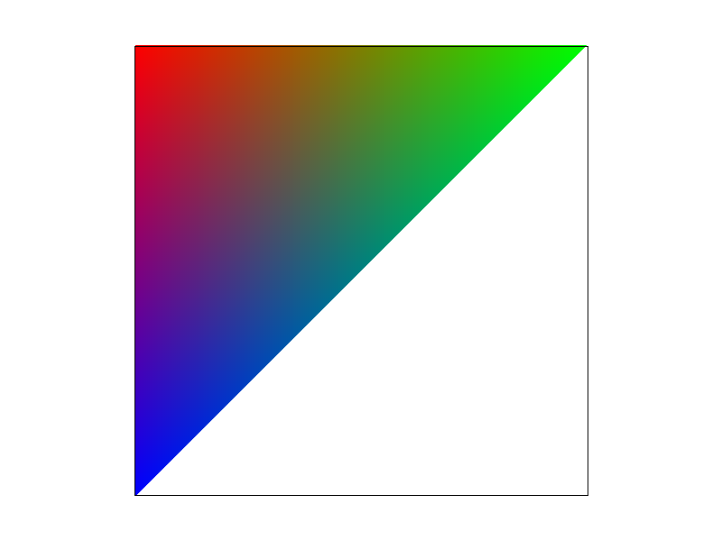
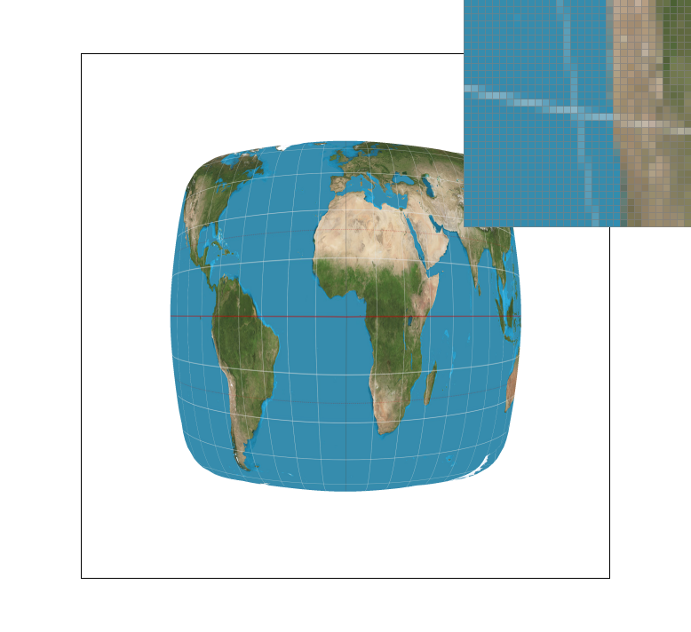

CS184 Summer 2025 Homework 1 Write-Up
Link to webpage: (TODO) https://john-bragado.dev/hw1
Link to GitHub repository: (TODO) https://github.com/john-bragado/john-bragado.github.io

Overview
[TODO]Task 1: Drawing Single-Color Triangles
Rasterizing triangles is the process of representing triangles (which are defined by 3 points and some sort of texture or color that fills the shape) visually by translating them into pixels which us humans can see on a screen (a grid of pixels).
The way we did this, given a set of 3 vertices (each with an x- and y- coordinate) and a solid color, is the naive approach. We checked every point within the bounding box of the triangle and colored in the corresponding pixel if its center was “inside” the triangle.
First, we implemented a helper function, lineEq(), which returns a boolean value that changes depending on which side of the line (given two points) a third point is on.
Then, inside the rasterize_triangle() function itself, we specified four variables to store the maximum and minimum x- and y-values of the bounding box (based on the triangle’s vertices)
Then, using a double for-loop, we checked the corresponding coordinate (x, y) of each pixel within the bounding box and if they satisfied either of these conditions for each line segment:
- that the winding order (represented by a bool
windingOrder) had the same sign as the result of passing (x, y) into thelinEq()function, or - that the result of passing (x, y) into the
linEq()function for was 0, meaning that it was on the line that passed through the two points defining the line segment.
If all three lines met one of the two criteria above, then the pixel at (x, y) would be considered “inside” the triangle and therefore the point would be rendered by calling fill_pixel() and passing in x, y, and the desired color.
Our algorithm is no worse than one that checks each sample within the bounding box of the triangle because that is exactly what we’re doing. We go through every pixel in the bounding box, meaning that if we have N pixels our runtime for this algorithm would be O(N).
Task 2: Antialiasing by Supersampling
Supersampling is super useful because sampling once per pixel can result in unintended aliasing. For example, rasterizing test4.svg from task 4 resulted in jaggies and pixels that appear to be detached from the rest of the triangle when they should not be. By sampling multiple times per pixel, we can work around these aliasing issues and create a smoother, more appealing effect. The way we decided to use supersampling in this case was to sample from a pixel n times (where n is the sample_rate set by the UI, and use the average color of those n subsamples as the resulting pixel color.
The most important change we made in task two was in implementing a RasterizerImp::sample_buffer vector and updating the functions:
RasterizerImp::set_sample_rate()- This function is called when the user changes the sampling rate via the - and = hotkeys. We updated the function to resize the sample buffer based on the newly selected sample_rate.
RasterizerImp::set_framebuffer_target()- Similarly to set_sample_rate(), this function had to be updated to resize the sample buffer accordingly.
RasterizerImp::clear_buffers()
And the size of the sample buffer itself was simply determined by product of the width and height of the framebuffer as well as the sample rate, n. since each item in the framebuffer vector represents a pixel and the sample_buffer should have n subsamples per pixel. The frame buffer vector is written and accessed by breaking each screen pixel into n subsample points, say in a 2 by 2 screen pixel, with sample rate of 4, the vector will be [pixel 1 sample 1, pixel 1 sample 2, pixel 1 sample 3, pixel 1 sample 4, pixel 2 sample 1 …] By doing that, we can simply access the all the super sampling point (in sample buffer space) value in RasterizerImp::fill_pixel() and RasterizerImp::resolve_to_framebuffer() whenever we know about which pixel in framebuffer we are looking for.
The function RasterizerImp::fill_pixel() with parameters x, y, and C was updated to populate every subsample in sample_buffer with the color C (rather than just a single sample per pixel). The function RasterizerImp::rasterize_triangle() was modified as well. Whereas we had previously called fill_pixel() in task 1, we now populate the sample_buffer to enable support for supersampling.
Finally, RasterizerImp::resolve_to_framebuffer() was updated to average the colors of each pixel’s subsamples and assign the corresponding item in RasterizerImp::rgb_framebuffer_target to the averaged color.
As seen in the table below, this results in a “smoothed out” look where pixels on the edge of triangles tend to be some blend of the White background and the triangle’s color. When looked at from a typical viewing distance (and not magnified), this eliminates jaggies and minimizes the appearance of detached pixels that we saw with a sample rate of 1.
|
|

|
|
|

|
Extra Credit for Task 2:
Here we implemented jittering toward the sampling point and the following are pictures with jittering combined with super sampling. The point of jittering is by adding some randomness as noise to the sampling point, therefore reducing the “fake lower frequency signal” look created by insufficient sampling frequency to sample higher frequency signal and convert that look into random noisy look that look less like a lower frequency signal.
It is implemented after the sampling point is determined. A random number generator will created a jittered x and y by adding a random number that is between half of the spacing between the pixels (both in positive and negative side) so that it will create that jittered look.
The code for this jitter-sampling is written as a different version of the RasterizerImp::rasterize_triangle() function which has been commented out right below our original implementation.
Task 3: Transforms
We changed the colors to give Cubeman brown skin, blue jeans, and a green shirt. We also rotated and translated his arms to be by his head, and then rotated the entire drawing 180° (and translated him downward) to make it look like he’s doing a handstand.Task 4: Barycentric coordinates
Barycentric coordinates are a set of scalar values that can represent points on the face of a triangle. We use barycentric coordinate systems to implement interpolation across triangles. They can be given in the form: \( \alpha A + \beta B + \gamma C \) where A, B and C are vectors we want to interpolate (in this case, color) while \( \alpha \), \( \beta \) and \( \gamma \) are scalars (such that \( \alpha + \beta + \gamma = 1 \)) that control how much each vector component contributes to the final value.
One way to look at this is through an example of a triangle whose colors are interpolated from the RGB spectrum. In Fig. 1, we have a triangle with a blue, red, and green vertices. If the red corner is A, blue is B, and green is G, then we can represnt each of these colors as 3D vectors from the RGB spectrum. That is, A = [255, 0, 0], B = [0, 255, 0], and C = [0, 0, 255]. Using the Barycentric coordinate system for the red corner A, we would find that a point in the red corner is 100% red and 0% blue or green. A point on the top edge halfway between the red and green corners would have coordinates of \( \alpha = 0.5\), \( \beta = 0\) and \( \gamma = 0.5\), resulting in a dull yellow [128, 128, 0]

|

|
The color wheel in test7.svg is a slightly more complex version of the interpolation seen in Fig. 1. Instead of one triangle, test7.svg contains many triangles arranged as slices in a circle, where each triangle interpolates between two bright colors towards the edge of the circle and black in the middle. This results in a smooth, round gradient effect between all hues.
Task 5: "Pixel sampling" for texture mapping
Pixel sampling is the process of taking an image texture and “sampling” colors from it to map it onto a grid of pixels. This is especially useful when mapping 2D texture onto distorted grids or onto 3D objects. One of the choices you have to make when implementing pixel_sampling is how you want to deal with sampling pixels from texels when there isn’t an exact match for resolution. We implemented two different sampling methods: naerest neighbors and bilinear interpolation.
To implement nearest neighbor texture sampling in Texture::sample_nearest(), we simply found the nearest whole integer x- and y- values that correspond to the given UV coordinates passed in as arguments. We did this by multiplying the u and v values by the mipmap (texture) width and height, respectively, rounding them to the nearest whole numbers, and assigning them to two int variables nearest_x and nearest_y.
As an example, let’s say we are sampling a point on the UV map with coordinates [0.31, 0.27] on a texture with a width and height of 450 x 450 texels. Our nearest texel on the UV space would be [140, 122], rounded up from [139.5, 121.5], and so we would use that texel’s color value as the color displayed to the corresponding pixel on the screen.
To implement bilinear interpolation texture sampling in Texture::sample_bilinear(), we stored x and y, the float values which represented the precise location the UV texture, as well as lower_x and lower_y, which represented the nearest texel (rounding down). Most inputs would lie between four points, so our code horizontally interpolated the color between the upper two nearest texels as well as the color between the lower two nearest texels, and then vertically interpolated those two colors and returned the result.
Since we knew that lerping values (specifically, colors) would be have to be done many times in the process of pixel sampling, we created two helper functions in the texture.cpp file, lerp() and lerpColor(). These allowed us to quickly lerp scalars and colors when needed.
The below images demonstrate the difference in the nearest neighbor and bilinear interpolation sampling methods.

|
|

|

|
The difference in the two sampling methods is clear from Figures 1 and 2. Whereas Fig. 1 shows the white curves (representing latitude and longitude) as broken lines of pixels. Meanwhile, the linear sampling in Fig. 2 shows much smoother antialiasing effects. We also notice that when the sampling rate is as high as 16 samples per pixel, the difference between the two sampling methods is not nearly as noticable. Thus, the difference between the two pixel sampling methods is much more impactful at smaller sampling rates (or when there is no subsampling) because in bilinear interpolation, we are doing a very similar process to supersampling where we are taking multiple samples and averaging their colors to get the color for our pixel. On the other hand, nearest neighbors sampling only takes one sample (the color of the nearest texel) and uses that for rasterizing, which is a recipe for jaggies and other aliasing.